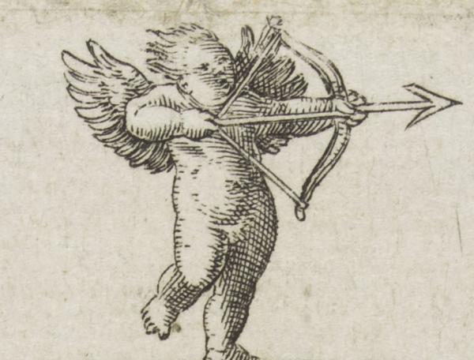

Assistance from the gods
Hera asks Aphrodite to help Jason get the fleece. Because of this, Aphrodite goes to Cupid to ask him to make Medea fall in love with Jason. In return, Cupid receives a gold and enamel blue ball from Aphrodite.

Virgil Solis. 1562
Duty to avenge family
After Pelias killed Jason's father and mother, Jason vowed to take revenge. He asked Medea to kill him, so she tricked Pelias's daughters by telling them she could make him young again. She told them to cut up his body and she would say a charm to revive him. After they killed him, Medea left.
She brought the death of Pelias by a cunning trick. To his daughters she said that she knew a secret, how to make the old young again; and to prove her words she cut up a ram worn out with many years, and put the pieces into a pot of boiling water. Then she uttered a charm and in a moment out from the water sprang a lamb and ran frisking away. The maidens were convinced. Medea gave Pelias a potent sleeping-draught and called upon his daughters to cut him into bits. With all their longing to make him young again they could hardly force themselves to do so, but at last the dreadful task was done, the pieces in the water, and they looked to Medea to speak the magic words that would bring him back to them and to his youth. But she was gone – gone from the palace and from the city, and horrified they realized that they were their father's murderers. Jason was revenged, indeed.